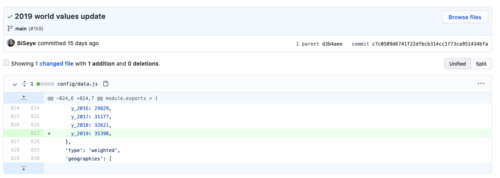
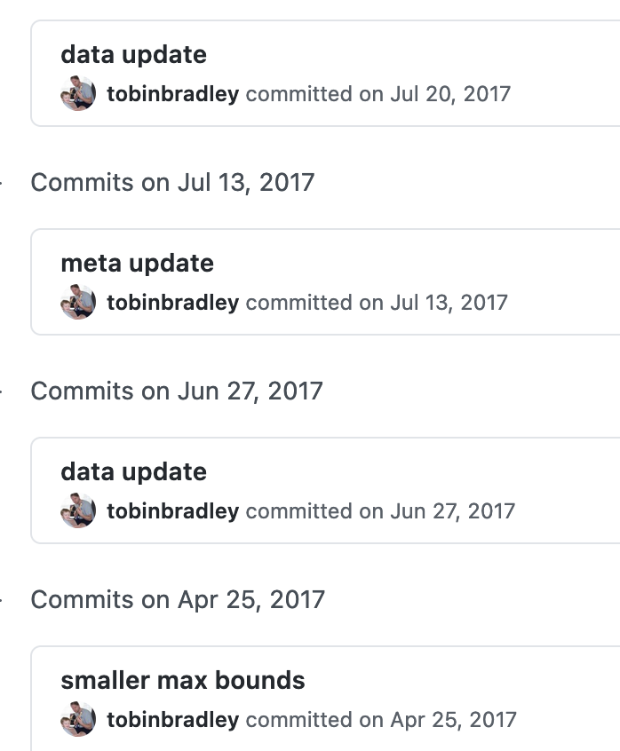
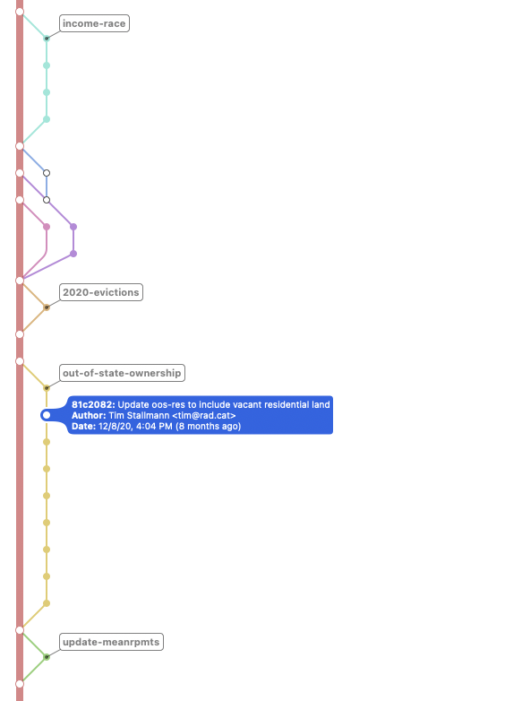

Git training
For DataWorks, 2021What is git?
Git is a free and open source distributed version control system designed to handle everything from small to very large projects with speed and efficiency.https://git-scm.com/
Version control system
- Git stores snapshots (commits) of your files
- You can use these to move backward and forward in time (like a more powerful undo/redo)
- But you can also work on different branches at the same time
Distributed
- Nearly everything happens on your local machine.
- Everyone using a git repository has their own copy of the history of that repository.
- There's no central server
So what is github?
Github is a git server & a web-based interface to browse and manage git repositories.
- You can store a git repo on github (or not!)
- You can use github's interface to merge branches, view pull requests, and even edit files
- Bitbucket and Gitlab are two other similar tools
Key concepts: Staging area

Source: Pro Git, section 1.3
Commands
git status- shows which files are tracked, modified,and staged
git add ⟨filename or directory⟩- adds a file or directory to the staging area
git add -p- interactively add changes to the staging area one-by-one
git add -a- add *all* changed files to the staging area
git diff- shows you the changes which are currently in your staging area
git reset- resets the staging area (but does not change the files on disk)
git reset --hard- resets the staging area and changes the files on disk
Key concepts: Commit
Commands
git diff --check- check if your changes introduce whitespace errors before you make a commit
git commit- creates a new commit and open up your default editor to edit the commit message. (n.b.
git config --global core.editor "nano"to set the default editor to nano).
git commit -m "⟨commit message⟩"- creates a new commit from the changes which are currently staged, with a shorter (one-line) commit message
git show- displays the commit message and file changes associated with the current commit
git log- shows the commit history
Sidebar: Commit messages
Source: Pro Git, section 5.2>
Key concepts: Branch
Commands
git checkout ⟨branch-name⟩- switches to a different branch
git checkout -b ⟨branch-name⟩- creates a new branch, rooted in your current commit
git branch- list branches you have locally, with a * next to the branch you're currently on
Your turn!
- Clone the git-training-sample repository
- Create a new branch, named with your name
- Add two commits to the branch:
- In one commit, edit the notes.txt file and add one thing you've learned so far after the colon witn your name
- In a second commit, add a cute animal photo to the photos directory
- Run git log and paste a screenshot of the output to the slack channel